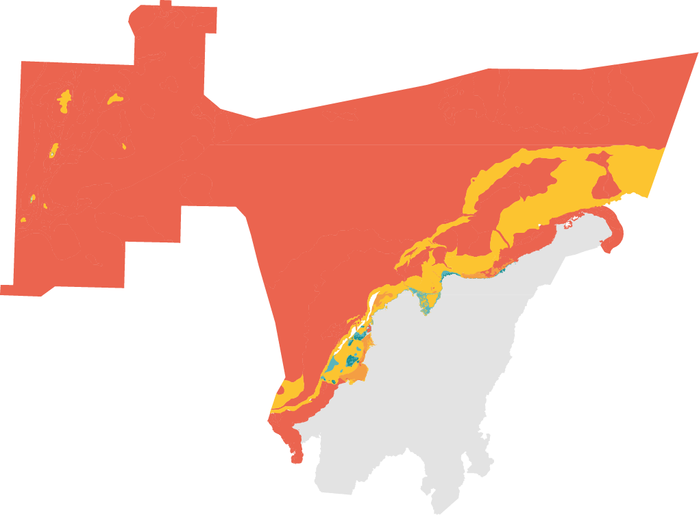
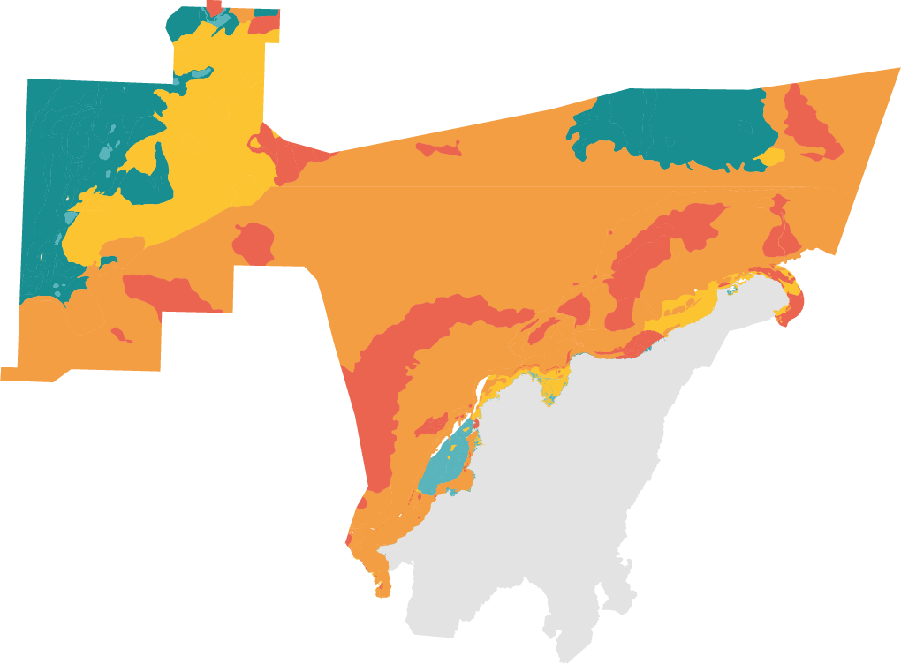

Cambios en la representatividad ecosistémica del SIRAP Caribe (2004 vs. 2024)
2004
2024
Subterrepresentado (> 60 %)
Representatividad alta (30-59 %)
Representatividad media (10-29 %)
Representatividad baja (< 10 %)
Sin representatividad (0 %)


Subterrepresentado (> 60 %)
Representatividad alta (30-59 %)
Representatividad media (10-29 %)
Representatividad baja (< 10 %)
Sin representatividad (0 %)
